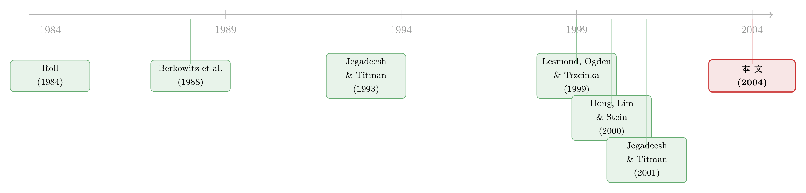

动量利润的「纸面富贵」：当赚钱的股票，恰好是最难交易的那批
本文读的是 Lesmond, Schill & Zhou (2004, JFE)：动量（momentum）策略账面上每月 0.88% 的超额收益，看上去像是市场无效的铁证；但作者指出，能产生这份收益的股票，恰恰是又小、又低价、又在 NYSE 之外、买卖价差又宽的高成本股票。一旦把真实的交易成本算进去，利润几乎被「吃干抹净」——它是一种「纸面富贵」（paper profit），看得见，却拿不到。
1 一个「稳赚不赔」的策略
先说一个让无数人心动的事实。
买入过去半年涨得最好的那 10% 股票，同时卖空过去半年跌得最惨的那 10% 股票，持有半年再换仓——这就是 Jegadeesh and Titman（下称 JT）1993 年那篇名作里的相对强度（relative strength），也就是后来人人都在说的「动量」。它每个月能稳稳地赚到约 0.88% 的超额收益，t 值显著。一年下来就是两位数，而且几乎不需要什么高深的模型，只要会排序、会换仓就行。
更要命的是，这个结果太「干净」了。它在不同的样本、不同的分位点、不同的市场上反复出现。Chan, Jegadeesh and Lakonishok（1996）做过，Rouwenhorst（1998）在欧洲做过，Hong, Lim and Stein（下称 HLS，2000）把 Nasdaq 也加进来做过。于是一大批行为金融的模型应运而生：投资者会外推（De Long et al., 1990）、会保守地更新预期（Barberis et al., 1998）、会自我归因（Daniel et al., 1998）、会处置效应（Grinblatt and Han, 2001）……每一个模型都在解释「为什么动量是真的」。
按照 Fama（1991）那句被引用了无数遍的话，严格的市场有效要求「证券价格充分反映所有可得信息」。动量摆明了违背这一点——今天的价格居然还在「记得」过去的价格。所以，动量似乎成了行为金融最锋利的一把武器。
但 Fama 自己其实留了一个后门。他还说过：一个「经济上更合理的有效假说」是，价格反映信息，直到「按信息行动的边际收益（能赚到的利润）不超过边际成本」为止。换句话说，只要交易是有成本的，价格的调整就允许有摩擦、有延迟。这扇后门，正是本文要钻进去的地方。
2 这 0.88% 到底是从哪条腿上赚来的？
接着，一个自然的问题是：这 0.88% 的利润，主要是「买赢家」赚的，还是「卖空输家」赚的？
这件事看似细枝末节，其实是整篇文章的命门。作者沿用 JT（1993）、HLS（2000）、JT（2001）三套不同的口径，在 1980–1998 年的 CRSP 样本上各复制了一遍，把股票按过去六个月的表现分成三组：差（P1）、中（P2）、好（P3）。结果如下：
- JT（1993）口径（NYSE/AMEX，10–90 分位）：P1、P2、P3 的月均收益分别是
0.74%、1.33%、1.62%，多空组合 P3−P1 =0.88%； - HLS（2000）口径（加入 Nasdaq，30–70 分位）：P3−P1 降到
0.45%； - JT（2001）口径（加入 Nasdaq，剔除股价 < $5、剔除最小市值十分位，10–90 分位）：P3−P1 升到
1.30%。
现在做一道关键的减法。如果把不参与交易的「中间组」P2 当作业绩基准，那么 (P2−P1)/(P3−P1) 这个比值，就衡量了多少利润来自做空那条腿。算出来：JT（1993）口径下，做空输家贡献了总利润的 67%；HLS 口径下是 53%；JT（2001）口径下高达 70%。
把 CAPM 跑一遍，结论更刺眼。三组的 alpha 分别是 P1 = −0.82%（t = −2.1）、P2 = −0.04%（t = −0.3）、P3 = 0.09%（t = 0.5）。请注意：真正显著偏离零的，只有输家组 P1，而赢家组 P3 的 alpha 几乎是零、还不显著。
于是真相浮出来了：动量的钱，绝大部分不是「赢家继续涨」赚的，而是「输家继续跌」、你靠做空它们赚的。
为什么这一步要紧？因为做空，从来不是免费的。要持续地从这些一路下跌的烂股票身上获利，你必须长期维持空头头寸——而这恰恰是教科书里那个被反复忽略的、最昂贵的动作。忽略输家的做空成本，对动量策略来说是「特别令人担忧」的。
（关于「动量到底是谁、在哪一条腿上交易出来的」，还可以参见《动量到底是谁干的？——把成交单拆成大小两摞来看》。）
3 但真正关键的一步：这些股票，长什么样？
然后，作者把这三组股票的「画像」摊开给你看。这是全文最有说服力的一击。
在 JT（1993）口径下，P1（输家）股票的平均股价只有 $8.95，中位数更是低到 $6.32；而 P2、P3 的中位股价分别是 $20.60 和 $19.36。市值上，P1 的中位市值只有 $55 million，是不折不扣的微型股。交易场所上，P1 中只有 53% 在 NYSE 挂牌，而 P2 高达 73%。一句话：产生动量收益的那批股票，是又小、又低价、又高 beta、又在 NYSE 之外的「边角料」。
更直观的证据来自日内收益的分布（即论文中的 Fig. 1）。作者统计了持有期里每只股票日收益落在各个区间的频率，发现三件事：
第一，「零收益日」多得惊人。整个样本里，平均一只股票超过 20% 的交易日收益恰好是 0%；而在 P1 组，这个比例高达 30%。第二，小幅波动反而罕见：日收益落在 0%–1% 这个区间的频率，P1 只有 9%，P2 有 29%，P3 有 23%。第三，大幅跳动却格外频繁：日收益落在 10%–20% 区间的频率，P1 是 5.2%、P2 是 1.7%、P3 是 2.8%；−10% 到 −20% 区间也是类似的 5.3%、1.3%、2.3%。
「高频率的零收益 + 低频率的小波动 + 高频率的大跳动」——这正是市场摩擦的指纹。当交易成本足够大时，价格会「黏」住不动：新信息必须积累到足够多、足够能覆盖交易成本，套利者才肯出手，于是价格要么不动（零收益），要么一动就是一大步。
这个「零收益越多、交易成本越高」的逻辑，正是 Lesmond, Ogden and Trzcinka（1999）那把 LDV 尺子的灵魂。Easley et al.（1996）也观察到：在 NYSE 上，个股几天甚至几周不交易是常事，伦敦有一只股票 11 年没成交过一次——而这类「半死不活」的股票，最大的共同特征就是宽得吓人的买卖价差。（用「数零」来给流动性定价的同一思路，也出现在《数不清的「零」：新兴市场用一串静止的价格，量出了流动性的价格》里。）
4 那道 1.5% 的门槛
到这里，故事的张力被彻底拉满。我们已经知道：动量的钱主要靠做空一堆微型烂股票赚来，而这些股票的交易成本注定不低。剩下的问题只是——到底要多低的成本，这个策略才划算？
作者给了一个朴素到无法反驳的算术。标准的 JT 六个月策略，半年的账面毛利大约是 6%。但执行它，一个完整的周期需要四笔交易：赢家开仓、赢家平仓、输家开空、输家平空。于是盈亏平衡的「每笔交易成本上限」是：
$$ \text{per-trade cost} \;<\; \frac{6\%}{4} \;=\; 1.5\% $$
也就是说，只要单边交易成本超过 1.5%，这个策略就不再赚钱。
1.5% 听起来不算苛刻？对蓝筹大盘股或许是的——这正是 JT（1993）当年用 Berkowitz et al.（1988）那个「1985 年初 NYSE 成交量加权」的成本基准时所默认的世界。但本文反复证明：动量组合里根本没有这种股票。它们是小盘、低价、Nasdaq、极端表现的票，买卖价差宽、价格冲击大、做空还有额外的持有成本和卖空约束。用一个 NYSE 大盘股的平均成本，去给一个由「边角料」主导的策略当基准，本身就用错了尺子。
作者特别点出 Berkowitz 基准的四宗罪：（1）交易成本有巨大的横截面差异（Keim and Madhavan, 1997），用 NYSE 加权均值完全不适用于这种小盘、非 NYSE、极端表现的策略；（2）单期度量抓不住交易成本几十年的时序波动（Lesmond et al., 1999；Jones, 2001）；（3）它漏掉了价差、税、卖空成本、持有期风险等一大块；（4）利润主要来自做空那条腿，而做空成本恰恰被忽略了。
为了不被人说「你故意把成本估高」，作者用了四把不同的尺子交叉验证：报价价差（quoted spread）、直接有效价差（effective spread）、Roll（1984）的隐含有效价差、以及 Lesmond et al.（1999）的 LDV 估计量。而且每一把尺子都用组合形成期之前的样本来估成本（比如 1980 年 1 月开始的组合，用 1978 年 7 月到 1979 年 6 月的数据估成本），以避免成本估计和收益之间的污染。所有这些设定，作者都刻意往「保守」的方向调——价差里特意剔除了佣金、卖空约束、机会成本。
结论是：用上这一整套保守的成本估计，几乎找不到证据表明标准策略的单边成本低于 1.5%。门槛过不去，利润也就拿不到。
5 反转：赚得越多的，恰恰越贵
如果故事到此为止，顶多算是「成本被低估了」。但本文真正的反转，藏在横截面里。
作者发现：那些产生更大毛利润的相对强度策略，系统性地对应着更大的交易成本；反之亦然。利润和成本像被一根看不见的线拴在一起——你想多赚一点，就必须去碰更贵的股票；你回避高成本的股票，利润也就跟着缩水。
这就把「动量是免费午餐」的叙事彻底掀翻了。相对强度组合的净收益，被交易成本死死地封顶（bounded by transaction costs）。文献里之所以看上去利润丰厚，是因为它系统性地高估了执行这些策略的真实成本。作者由此给出一个相当克制、却很难反驳的结论：几乎没有证据可以拒绝「无套利」——动量这个异象，并不需要请出一堆行为偏差来解释，它很可能只是文献「太轻视交易成本的经济意义」而造成的幻觉。
（一个更一般的版本是：市场异象的多空组合往往并不「流动性中性」，做空腿尤其偏向难交易的股票——这正是《流动性的方向感：异象多空组合，其实并不「流动性中性」》所讲的事情。）
6 文献脉络
把这条线索捋一捋，会看到两股力量在 2004 年这里相撞。
一股是「动量是真的」这条主线。Roll（1984）给了我们从价格反弹里估计隐含价差的工具；但真正点燃战火的是 Jegadeesh and Titman（1993）——买赢家、卖输家，半年到一年的尺度上稳定地赚超额收益。随后 Chan, Jegadeesh and Lakonishok（1996）、HLS（2000）、JT（2001）不断扩样本、换口径，把动量做成了金融学里最稳健的异象之一，行为金融的模型也借此遍地开花。
另一股是「交易成本被严重低估」这条暗线。Berkowitz et al.（1988）给出的 NYSE 成本基准，本是 JT 用来证明「动量扛得住成本」的依据；但 Lesmond, Ogden and Trzcinka（1999）提出的 LDV 估计量，用「数零收益」这种巧妙的间接方法，把价差、佣金、即时性成本、卖空成本一并纳了进来，揭示出小盘、非 NYSE 股票的真实成本远比想象中高。

本文，正是把这两股力量正面接到了一起：它没有否认动量在「纸面」上存在，而是把动量组合的成分股一个个拎出来，证明它们恰好是 LDV 尺子下成本最高的那批，从而让 0.88% 的账面利润，在 1.5% 的门槛前不攻自破。它和 Conrad and Kaul（1998）、Grundy and Martin（2001）这些「非行为」解释站在同一阵营，但走的是一条更朴素、也更难反驳的路：先别谈风险因子，先把账算清楚。
7 评论与延伸（Q&A + 研究方向）
(a) 几个可能的疑问
Q：这和「动量是风险补偿」是一回事吗？
不是。Conrad and Kaul（1998）、Grundy and Martin（2001）、Ang et al.（2002）试图用横截面均值差异、系统性风险或下行风险来解释动量；本文走的是完全不同的路——它不否认毛利润存在，只论证净利润被交易成本吃掉了。它质疑的不是「动量的来源」，而是「动量到底能不能被实现」。
Q：作者会不会故意把成本估高，来凑出结论？
恰恰相反。作者在每一处都往保守方向调：价差里特意剔除了佣金、卖空约束和机会成本；LDV 估计也因为「只用观测到的零收益、低估了真实零收益数」而偏保守。换句话说，真实成本只会比他们报的更高。结论是在「自缚手脚」的前提下得到的。
Q：既然赢家组（P3）的 alpha 不显著，做多赢家是不是其实没问题？
这正是本文最锋利的地方。利润的
67%–70%来自做空输家（P1），而 P1 是小盘、低价、非 NYSE 的高成本股票，做空它们还要额外承担卖空成本和约束。问题不在做多那条相对便宜的腿，而在做空那条又贵又难的腿——偏偏利润主要靠它。
Q：换个形成期/持有期，结论会变吗？
作者声称对多种形成期与持有期都重做了检验，结论不变。而且他们刻意只用文献里最主流的六月/六月口径，以避免「从一堆策略里捞出样本内最优的那个」——用他们的话说，这是在「跟自己作对」（stacking the deck against ourselves）。
Q：为什么「零收益日」能当交易成本的代理变量？
来自 Lesmond et al.（1999）的 LDV 逻辑：套利者只在「积累的信息价值 > 边际交易成本」时才出手。成本越高，新信息要积累越久才足以触发交易，于是零收益日越频繁。P1 组高达 30% 的零收益日，本身就是高成本的直接信号。
Q：那它是不是判了动量「死刑」？后来呢？
没有那么绝对。Korajczyk and Sadka（2002）等后续工作用价格冲击函数、并考虑资金规模，得出在一定规模内动量仍可能盈利的结论。本文真正的贡献，是把「交易成本」从一句轻描淡写的脚注，抬升为评判任何异象时必须正面回答的问题。
(b) 几个可能的研究问题与提案
1. 把同一把「数零」的尺子搬到公司债动量上。
【经济故事】公司债同样有动量，而且债券比股票更不流动、零成交日更普遍、买卖价差更宽、做空更难。本文的逻辑在信用市场里只会被放大：债券动量的「纸面利润」很可能更彻底地被交易成本吞噬。 【可行性】中高。TRACE 提供成交价与成交量，可构造 LDV 类的零收益/价差度量；难点在于公司债不是每日成交，需要处理稀疏成交与价格陈旧化（stale pricing）。识别上可对比投资级与高收益的成本梯度。
2. 把外资持有人当作「交易成本的外生变化」。
【经济故事】当一只股票被纳入某指数、或对外资开放（可投资度上升），其流动性与做空可得性会改善。如果本文逻辑成立，那么流动性改善后，原本「拿不到」的动量净利润应当部分变得「可实现」——这是一个对本文机制的直接检验。 【可行性】中。可用 MSCI 可投资度调整或纳入指数事件做双重差分（difference-in-differences, DiD），比较事件前后同类动量组合的净收益变化。挑战在于流动性改善与基本面变化的混淆。
3. 做空成本到底吃掉了多少？把空头腿单独定价。
【经济故事】既然
67%–70%的利润来自做空腿，那么直接用现代的证券借贷数据（借券费率、可借数量）给输家组的做空成本定价，就能把「门槛」从 1.5% 的粗算，细化成逐股、逐月的真实卖空成本曲线。 【可行性】高。D'Avolio（2003）一类的借券市场数据已较成熟，可逐月匹配 P1 组的借券费率，重估扣除真实做空成本后的净动量收益。
4. 时序上的成本崩塌：交易成本下降是否「复活」了动量？
【经济故事】1980–1998 之后，佣金自由化、十进制报价、电子化交易让成本系统性下降。如果动量是被成本封顶的，那么成本下降应当让净动量收益随时间上升——这是对本文机制的一个跨时检验。 【可行性】中。需要把 Jones（2001）式的长期成本序列延伸到近年，并控制动量本身的衰减（异象在被发表后往往减弱），把「成本下降」与「异象拥挤」两股相反的力量分离开。
我的判断
这篇文章的贡献，不在于发明了什么新方法，而在于一个态度：在为某个异象编织行为故事之前，先老老实实把交易成本这笔账算到底。它把「动量的钱主要靠做空小盘烂股」「这些股票恰好成本最高」「利润与成本在横截面上同向绑定」三件事串成一条无可辩驳的链条，逼着整个文献重新面对 Fama（1991）那扇「边际收益不超过边际成本」的后门。这是典型的「用最朴素的算术，掀翻最华丽的叙事」。
对识别，我有两点保留。其一，LDV 估计量本身依赖「真实收益服从正态、零收益源于信息不足以覆盖成本」等假设；当价格陈旧化（stale pricing）与真正的「无信息」难以区分时，零收益度量可能既包含成本、也包含别的东西。其二，文章证明的是「按某种保守口径，成本高于 1.5% 门槛」，但门槛本身是个静态算术——它没有显式建模套利者会优化执行（拆单、择时、控制规模）。Korajczyk and Sadka（2002）后来正是从这个口子切入，得到不那么悲观的结论。
我接下来最想看到的，是把这套「数零 + 算门槛」的框架，干净地搬到公司债与信用市场，并配上现代的借券费率数据，对做空腿做逐股定价——因为本文最致命的一击（利润几乎全在做空腿、而做空恰恰最贵）至今仍是大多数异象研究刻意绕开的盲区。
参考文献
- Barberis, N., Shleifer, A., Vishny, R. (1998). A model of investor sentiment. Journal of Financial Economics 49, 307–343.
- Berkowitz, S.A., Logue, D.E., Noser, E.A. (1988). The total costs of trading in the NYSE. The Journal of Finance 43, 97–112.
- Chan, L.K.C., Jegadeesh, N., Lakonishok, J. (1996). Momentum strategies. The Journal of Finance 51, 1681–1713.
- Conrad, J., Kaul, G. (1998). An anatomy of trading strategies. The Review of Financial Studies 11, 489–519.
- Daniel, K., Hirshleifer, D., Subrahmanyam, A. (1998). Investor psychology and security market under- and overreactions. The Journal of Finance 53, 1839–1887.
- Easley, D., Kiefer, N.M., O'Hara, M., Paperman, J.B. (1996). Liquidity, information, and infrequently traded stocks. The Journal of Finance 51, 1405–1436.
- Fama, E.F. (1991). Efficient capital markets: II. The Journal of Finance 46, 1575–1617.
- Grundy, B.D., Martin, J.S. (2001). Understanding the nature of the risks and the source of the rewards to momentum investing. The Review of Financial Studies 14, 29–78.
- Hong, H., Lim, T., Stein, J.C. (2000). Bad news travels slowly: size, analyst coverage, and the profitability of momentum strategies. The Journal of Finance 55, 265–296.
- Jegadeesh, N., Titman, S. (1993). Returns to buying winners and selling losers: implications for stock market efficiency. The Journal of Finance 48, 65–91.
- Jegadeesh, N., Titman, S. (2001). Profitability of momentum strategies: an evaluation of alternative explanations. The Journal of Finance 56, 699–720.
- Keim, D.B., Madhavan, A. (1997). Transactions costs and investment style: an inter-exchange analysis of institutional equity trades. The Journal of Financial Economics 46, 265–292.
- Korajczyk, R., Sadka, R. (2002). Are momentum profits robust to trading costs? Unpublished working paper, Northwestern University.
- Lesmond, D.A., Ogden, J.P., Trzcinka, C.A. (1999). A new estimate of transaction costs. The Review of Financial Studies 12, 1113–1141.
- Lesmond, D.A., Schill, M.J., Zhou, C. (2004). The illusory nature of momentum profits. Journal of Financial Economics 71, 349–380.
- Roll, R. (1984). A simple implicit measure of the effective bid-ask spread in an efficient market. The Journal of Finance 39, 1127–1139.